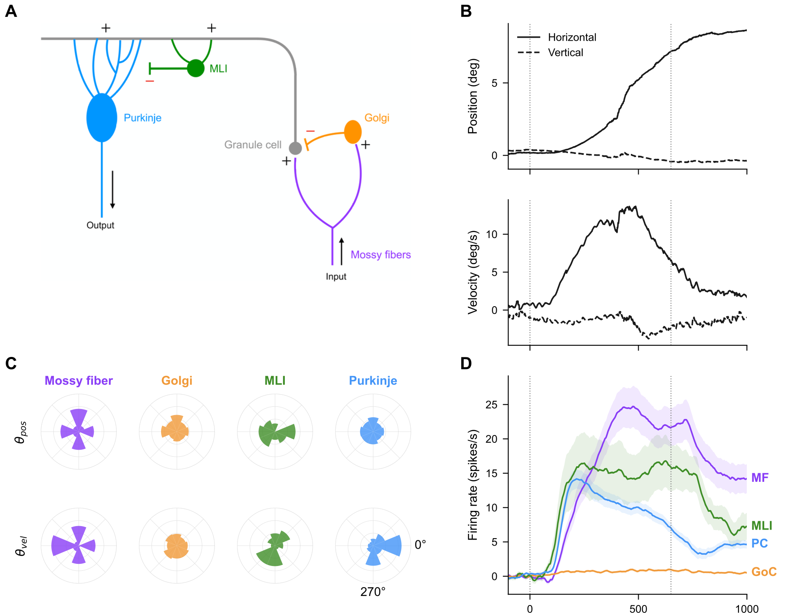
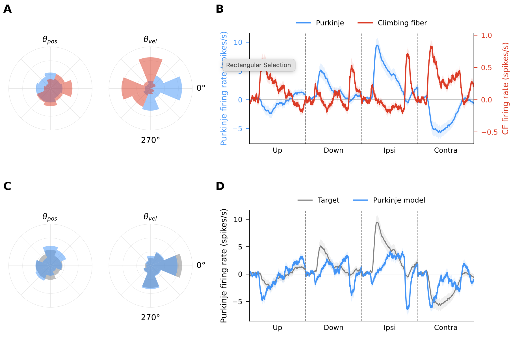

Random and structured connectivity in the cerebellar circuit
In short
We fitted a model of the cerebellar cortex to recordings from four cell types in monkeys tracking a moving target. Random synaptic weights explain much of the activity of the circuit's intermediate cells, but not the Purkinje cells, the circuit's output. Their direction selectivity and timing require individually organized synapses.
The question
The cerebellum is one of the best-mapped circuits in the brain. Mossy fibers bring signals into the cerebellar cortex, where they are expanded across a huge population of granule cells and read out by Purkinje cells, the only output of the cortex. Golgi cells and molecular layer interneurons add inhibition along the way. Classic theories (Marr, Albus) propose that this expansion is essentially random, and that the useful structure is learned at the granule cell to Purkinje cell synapses, guided by climbing fiber signals.
During smooth-pursuit eye movements, the different cell types respond very differently: mossy fibers track eye position, Purkinje cells respond transiently and prefer particular directions, and Golgi cells hardly respond at all. We asked which of these response properties can emerge from the circuit's wiring with random synaptic strengths, and which require specific organization of individual synapses.
The data
We analyzed extracellular recordings from the floccular complex of three rhesus macaques, collected by D. J. Herzfeld and S. G. Lisberger at Duke University, with cell types identified by recent classification methods. In each trial the monkey fixated a central target, then tracked it as it moved at 20 deg/s in one of four directions for 650 ms, and finally held fixation at the endpoint for 350 ms. For every neuron, I regressed firing rate on eye position and velocity to measure what kinematic information it carries and which direction it prefers.
| Population | Cells | Kinematic fit (mean R²) | Response during pursuit |
|---|---|---|---|
| Mossy fibers | 62 | 0.66 | Sustained, position-like; tuned to all four directions equally |
| Golgi cells | 191 | 0.18 | Barely modulated; no clear direction preference |
| Molecular layer interneurons | 23 | 0.36 | Fast rise, elevated throughout pursuit; weak tuning |
| Purkinje cells | 216 | 0.51 | Fast transient, velocity-like; strongly prefer ipsiversive and downward motion |

The model
I built a feedforward rate model of the cerebellar cortex driven by the recorded eye kinematics. As input, I generated a synthetic mossy fiber population from a generative model fitted to the recorded mossy fibers. It reproduces the recorded tuning statistics, including their dependencies and the preference for the four cardinal directions. The downstream network was then trained jointly to match the recorded Golgi cells, interneurons and Purkinje cells, using a loss that compares tuning distributions, preferred directions and population time courses.
The key comparison is between two ways of setting the synapses:
| Random-weight regime | Optimized-weight regime | |
|---|---|---|
| Individual synapses | Drawn at random and fixed | Each one trained independently |
| What is fitted | Only the overall strength of each projection and the bias distributions | Every synaptic weight and every unit's bias |
| Trainable parameters | 15 | ≈ 19 million |

Results
To judge each model fairly, its loss against the data was compared with the loss between two halves of the recorded data itself. A model that falls close to this data-vs-data baseline matches the recordings within their natural variability. Lower is better.
Golgi cells
Random wiring explains the lack of tuning, but not the weak response. Each Golgi cell sums about 40 mossy fibers, so random mixing spreads preferred directions around the circle, as in the data. But summing excitatory inputs makes them inherit the mossy fibers' positive response. Silencing it with random weights flattens their tuning too much; individually set weights resolve this.
Interneurons
Random wiring is largely enough. The random model matches the recorded statistics within the data's own variability and reproduces the weak directional tuning. It misses only the rapid rise after motion onset, which optimization recovers.
Purkinje cells
Random wiring fails. It produces a nearly flat response across all four directions and misses the strong bias toward ipsiversive and downward velocity. Optimizing individual weights recovers both the directional bias and the direction-dependent time course.

Can a learning rule supply the missing structure?
In the recordings, climbing fiber activity is roughly opposite to Purkinje cell activity across directions. Building on this, I replaced the optimized granule cell to Purkinje cell weights with a biologically motivated rule with only two parameters: a synapse weakens when granule cell activity coincides with increased climbing fiber firing, and strengthens when climbing fiber firing decreases. This rule reproduced the Purkinje cells' directional organization, including the asymmetric velocity tuning, but not their fast response at motion onset. Something beyond the climbing fiber signal is needed to explain the full time course.

Why it matters
The circuit's architecture and the precise organization of its synapses contribute differently at different stages. Intermediate populations can be explained largely by the wiring itself, while the Purkinje cell output needs specifically organized synapses. The final stages of the circuit actively shape the output rather than relaying directional structure already present in the mossy fiber input. The results come from a simplified feedforward model, without recurrent connections or additional cell types, and granule cell activity is inferred rather than recorded.
Status
A manuscript with Łukasz Kuśmierz and Nicolas Brunel is in preparation. I presented this work at the NeuroML Journal Club at Bocconi in February 2026 (Evaluating Random Connectivity in the Cerebellar Cortex). The model is implemented in PyTorch.